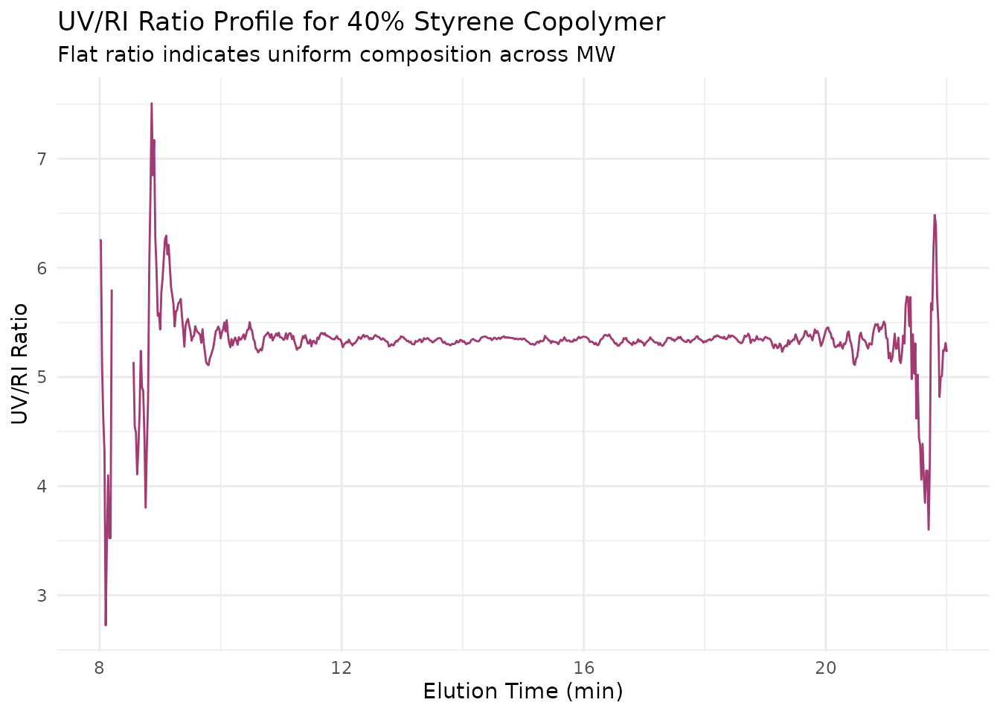
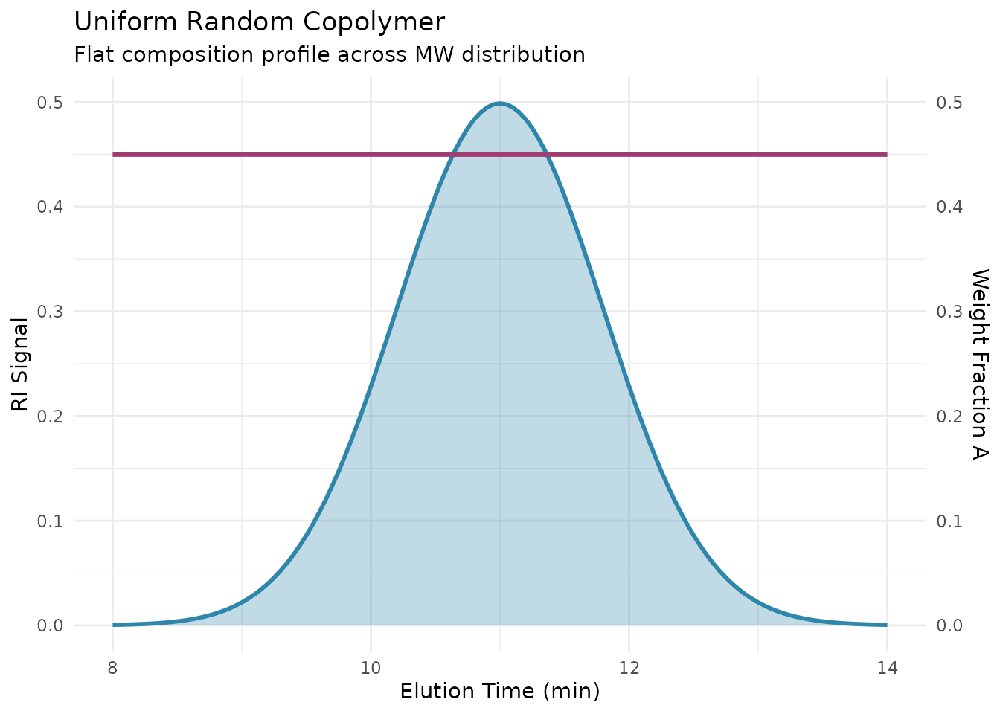
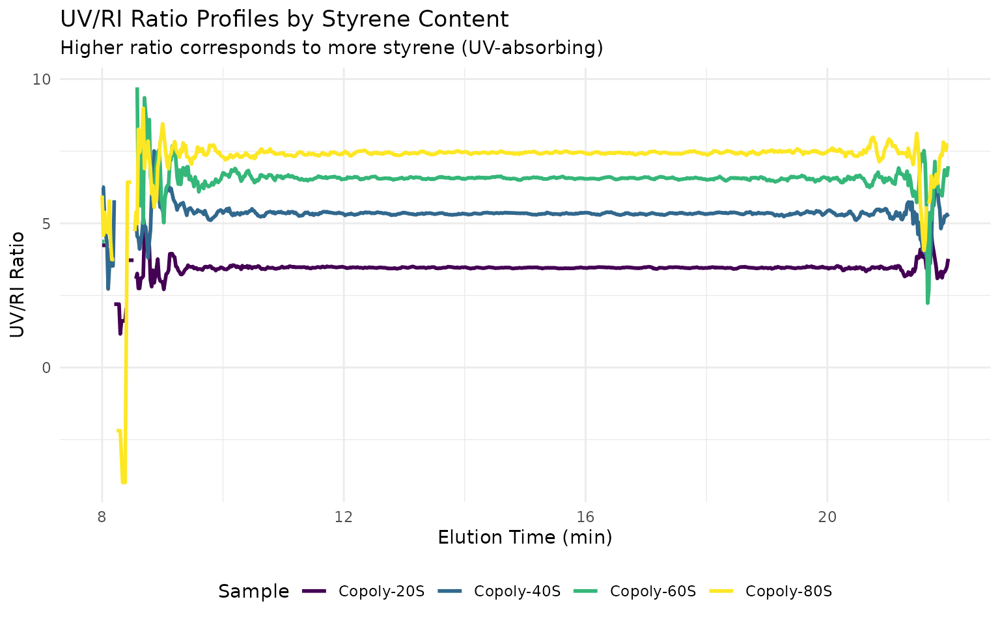

Overview
SEC with dual detection (UV and RI) can reveal compositional heterogeneity in copolymers. By analyzing the UV/RI ratio across the molecular weight distribution, you can:
- Detect compositional drift during polymerization
- Identify blocky vs random copolymer structures
- Quantify the composition at different molecular weights
This vignette covers:
- UV/RI ratio analysis
- Composition calculations
- Interpreting compositional heterogeneity
Setup
library(measure)
#> Loading required package: recipes
#> Loading required package: dplyr
#>
#> Attaching package: 'dplyr'
#> The following objects are masked from 'package:stats':
#>
#> filter, lag
#> The following objects are masked from 'package:base':
#>
#> intersect, setdiff, setequal, union
#>
#> Attaching package: 'recipes'
#> The following object is masked from 'package:stats':
#>
#> step
library(measure.sec)
library(recipes)
library(dplyr)
library(ggplot2)Copolymer Detection Principles
Example Dataset
The package includes sec_copolymer, a dataset of
styrene-acrylate copolymers with varying compositions:
data(sec_copolymer, package = "measure.sec")
# View the dataset structure
glimpse(sec_copolymer)
#> Rows: 4,206
#> Columns: 8
#> $ sample_id <chr> "Copoly-20S", "Copoly-20S", "Copoly-20S", "Copoly-20S…
#> $ elution_time <dbl> 8.00, 8.02, 8.04, 8.06, 8.08, 8.10, 8.12, 8.14, 8.16,…
#> $ ri_signal <dbl> 0.005043384, 0.004595667, 0.004945809, 0.005114517, 0…
#> $ uv_254_signal <dbl> 0.01516172, 0.01369785, 0.01487566, 0.01432866, 0.015…
#> $ styrene_fraction <dbl> 0.2, 0.2, 0.2, 0.2, 0.2, 0.2, 0.2, 0.2, 0.2, 0.2, 0.2…
#> $ mw <dbl> 45000, 45000, 45000, 45000, 45000, 45000, 45000, 4500…
#> $ dispersity <dbl> 1.8, 1.8, 1.8, 1.8, 1.8, 1.8, 1.8, 1.8, 1.8, 1.8, 1.8…
#> $ description <chr> "20% styrene, 80% acrylate", "20% styrene, 80% acryla…
# Available samples
sec_copolymer |>
distinct(sample_id, styrene_fraction, description)
#> # A tibble: 6 × 3
#> sample_id styrene_fraction description
#> <chr> <dbl> <chr>
#> 1 Copoly-20S 0.2 20% styrene, 80% acrylate
#> 2 Copoly-40S 0.4 40% styrene, 60% acrylate
#> 3 Copoly-60S 0.6 60% styrene, 40% acrylate
#> 4 Copoly-80S 0.8 80% styrene, 20% acrylate
#> 5 PS-Homo 1 Polystyrene homopolymer
#> 6 PA-Homo 0 Polyacrylate homopolymerUV/RI Ratio Analysis
Basic Workflow
# Analyze a single copolymer sample
copoly_40 <- sec_copolymer |>
filter(sample_id == "Copoly-40S")
# UV/RI ratio analysis for compositional heterogeneity
rec_ratio <- recipe(
ri_signal + uv_254_signal + elution_time ~ sample_id,
data = copoly_40
) |>
update_role(sample_id, new_role = "id") |>
# Convert signals to measure format
step_measure_input_long(
ri_signal,
location = vars(elution_time),
col_name = "ri"
) |>
step_measure_input_long(
uv_254_signal,
location = vars(elution_time),
col_name = "uv"
) |>
# Baseline correction
step_sec_baseline(measures = c("ri", "uv")) |>
# Calculate UV/RI ratio
step_sec_uv_ri_ratio(
uv_col = "uv",
ri_col = "ri",
smooth = TRUE # Apply smoothing for noise reduction
)
prepped_ratio <- prep(rec_ratio)
result_ratio <- bake(prepped_ratio, new_data = NULL)
# View result columns
names(result_ratio)
#> [1] "sample_id" "ri" "uv" "elution_time" "uv_ri_ratio"Extracting the Ratio Curve
# The uv_ri_ratio column contains a measure_list
# Extract the ratio values at each elution time
ratio_data <- result_ratio |>
select(sample_id, uv_ri_ratio) |>
tidyr::unnest(uv_ri_ratio)
# Plot ratio vs elution time
ggplot(ratio_data, aes(location, value)) +
geom_line(color = "#A23B72") +
labs(
x = "Elution Time (min)",
y = "UV/RI Ratio",
title = "UV/RI Ratio Profile for 40% Styrene Copolymer",
subtitle = "Flat ratio indicates uniform composition across MW"
) +
theme_minimal()
Composition Calculation
Using Known Response Factors
When you know the response factors for each monomer, calculate actual composition:
# Composition calculation with known response factors for styrene-acrylate
rec_comp <- recipe(
ri_signal + uv_254_signal + elution_time ~ sample_id,
data = copoly_40
) |>
update_role(sample_id, new_role = "id") |>
step_measure_input_long(ri_signal, location = vars(elution_time), col_name = "ri") |>
step_measure_input_long(uv_254_signal, location = vars(elution_time), col_name = "uv") |>
step_sec_baseline(measures = c("ri", "uv")) |>
# Calculate composition from UV/RI
step_sec_composition(
uv_col = "uv",
ri_col = "ri",
# Response factors for styrene (UV-active)
component_a_uv = 1.0, # Strong UV absorption at 254 nm
component_a_ri = 0.185, # dn/dc in THF
# Response factors for acrylate (UV-inactive)
component_b_uv = 0.02, # Weak UV absorption
component_b_ri = 0.084 # dn/dc in THF
)
prepped_comp <- prep(rec_comp)
result_comp <- bake(prepped_comp, new_data = NULL)
# Result contains composition columns
result_comp |>
select(sample_id, starts_with("composition_"))
#> # A tibble: 1 × 2
#> sample_id composition_a
#> <chr> <meas>
#> 1 Copoly-40S [701 × 2]Response Factor Determination
Response factors should be measured experimentally:
- dn/dc: Measure with differential refractometer
- UV extinction: Measure with UV-Vis spectrophotometer
Typical values (THF, 25°C):
| Polymer | dn/dc (mL/g) | ε₂₅₄ (mL/(g·cm)) |
|---|---|---|
| Polystyrene | 0.185 | 1.0 |
| PMMA | 0.084 | ~0.01 |
| Polybutadiene | 0.127 | 0.05 |
| PEG | 0.069 | ~0 |
Interpreting Results
Uniform Composition

Characteristics: - Constant UV/RI ratio - Flat composition profile - Indicates random or alternating copolymer
Comparing Multiple Copolymers
Analyze all copolymer samples to compare UV/RI ratios across compositions:
# Analyze all samples (excluding homopolymers for this example)
copolymers_only <- sec_copolymer |>
filter(stringr::str_starts(sample_id, "Copoly"))
# Process all copolymers
rec_all <- recipe(
ri_signal + uv_254_signal + elution_time ~ sample_id,
data = copolymers_only
) |>
update_role(sample_id, new_role = "id") |>
step_measure_input_long(ri_signal, location = vars(elution_time), col_name = "ri") |>
step_measure_input_long(uv_254_signal, location = vars(elution_time), col_name = "uv") |>
step_sec_baseline(measures = c("ri", "uv")) |>
step_sec_uv_ri_ratio(uv_col = "uv", ri_col = "ri", smooth = TRUE)
prepped_all <- prep(rec_all)
result_all <- bake(prepped_all, new_data = NULL)
# Extract ratio curves for plotting
all_ratios <- result_all |>
select(sample_id, uv_ri_ratio) |>
tidyr::unnest(uv_ri_ratio)
# Plot UV/RI ratios - higher ratio = more styrene
ggplot(all_ratios, aes(location, value, color = sample_id)) +
geom_line(linewidth = 1) +
labs(
x = "Elution Time (min)",
y = "UV/RI Ratio",
color = "Sample",
title = "UV/RI Ratio Profiles by Styrene Content",
subtitle = "Higher ratio corresponds to more styrene (UV-absorbing)"
) +
scale_color_viridis_d() +
theme_minimal() +
theme(legend.position = "bottom")
Best Practices
Detector Calibration
- Verify response factors with homopolymer standards
- Account for detector delay between UV and RI
- Use same solvent as for response factor determination
See Also
- Getting Started - Basic SEC workflow and concepts
- Multi-Detector SEC - Detector setup and processing
- Calibration Management - Save and reuse calibrations
- Exporting Results - Summary tables and report generation
Session Info
sessionInfo()
#> R version 4.5.2 (2025-10-31)
#> Platform: x86_64-pc-linux-gnu
#> Running under: Ubuntu 24.04.3 LTS
#>
#> Matrix products: default
#> BLAS: /usr/lib/x86_64-linux-gnu/openblas-pthread/libblas.so.3
#> LAPACK: /usr/lib/x86_64-linux-gnu/openblas-pthread/libopenblasp-r0.3.26.so; LAPACK version 3.12.0
#>
#> locale:
#> [1] LC_CTYPE=C.UTF-8 LC_NUMERIC=C LC_TIME=C.UTF-8
#> [4] LC_COLLATE=C.UTF-8 LC_MONETARY=C.UTF-8 LC_MESSAGES=C.UTF-8
#> [7] LC_PAPER=C.UTF-8 LC_NAME=C LC_ADDRESS=C
#> [10] LC_TELEPHONE=C LC_MEASUREMENT=C.UTF-8 LC_IDENTIFICATION=C
#>
#> time zone: UTC
#> tzcode source: system (glibc)
#>
#> attached base packages:
#> [1] stats graphics grDevices utils datasets methods base
#>
#> other attached packages:
#> [1] ggplot2_4.0.1 measure.sec_0.0.0.9000 measure_0.0.1.9001
#> [4] recipes_1.3.1 dplyr_1.1.4
#>
#> loaded via a namespace (and not attached):
#> [1] gtable_0.3.6 xfun_0.55 bslib_0.9.0
#> [4] lattice_0.22-7 vctrs_0.6.5 tools_4.5.2
#> [7] generics_0.1.4 parallel_4.5.2 tibble_3.3.0
#> [10] pkgconfig_2.0.3 Matrix_1.7-4 data.table_1.18.0
#> [13] RColorBrewer_1.1-3 S7_0.2.1 desc_1.4.3
#> [16] lifecycle_1.0.4 stringr_1.6.0 compiler_4.5.2
#> [19] farver_2.1.2 textshaping_1.0.4 codetools_0.2-20
#> [22] htmltools_0.5.9 class_7.3-23 sass_0.4.10
#> [25] yaml_2.3.12 prodlim_2025.04.28 tidyr_1.3.2
#> [28] pillar_1.11.1 pkgdown_2.2.0 jquerylib_0.1.4
#> [31] MASS_7.3-65 cachem_1.1.0 gower_1.0.2
#> [34] rpart_4.1.24 parallelly_1.46.0 lava_1.8.2
#> [37] tidyselect_1.2.1 digest_0.6.39 stringi_1.8.7
#> [40] future_1.68.0 purrr_1.2.0 listenv_0.10.0
#> [43] labeling_0.4.3 splines_4.5.2 fastmap_1.2.0
#> [46] grid_4.5.2 cli_3.6.5 magrittr_2.0.4
#> [49] utf8_1.2.6 survival_3.8-3 future.apply_1.20.1
#> [52] withr_3.0.2 scales_1.4.0 lubridate_1.9.4
#> [55] timechange_0.3.0 rmarkdown_2.30 globals_0.18.0
#> [58] nnet_7.3-20 timeDate_4051.111 ragg_1.5.0
#> [61] evaluate_1.0.5 knitr_1.51 hardhat_1.4.2
#> [64] viridisLite_0.4.2 rlang_1.1.6 Rcpp_1.1.0
#> [67] glue_1.8.0 ipred_0.9-15 jsonlite_2.0.0
#> [70] R6_2.6.1 systemfonts_1.3.1 fs_1.6.6